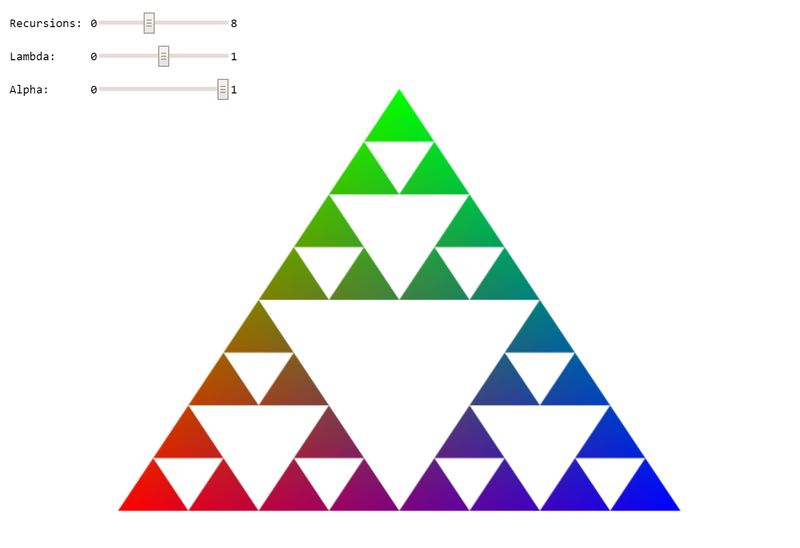

New Jersey Institute of Technology: CS 438
Interactive Computer Graphics
Task 1 (6 points)
Search for TODO_A1 in the JS file to find all tasks in the code!
Triangle subdivision and color interpolation:
1a: Create a 2d Sierpinski Gasket geometry by calling this function recursively. Use the argument 'recursions' to specify the depth of the recursion. Use the function mix(a, b, lambda) for both the vertex and color interpolation with lambda = 0.5 (4 points). What happens if you use a different value for lambda (1 point)? Explain in the documentation below.
1b: What does the slider 'Alpha' change? How? Explain in the documentation below (1 point).
Your result should look like on the image below:
WebGL Canvas
Documentation
Please write a short report here. It should list what you have implemented, as well as a brief discussion and your conclusions. Also add as many comments in your code as possible---it will help us in judging your work.
Good Luck!
Instructor: Assoc. Prof. Dr. Przemyslaw Musialski
Email: przemyslaw.musialski@njit.edu